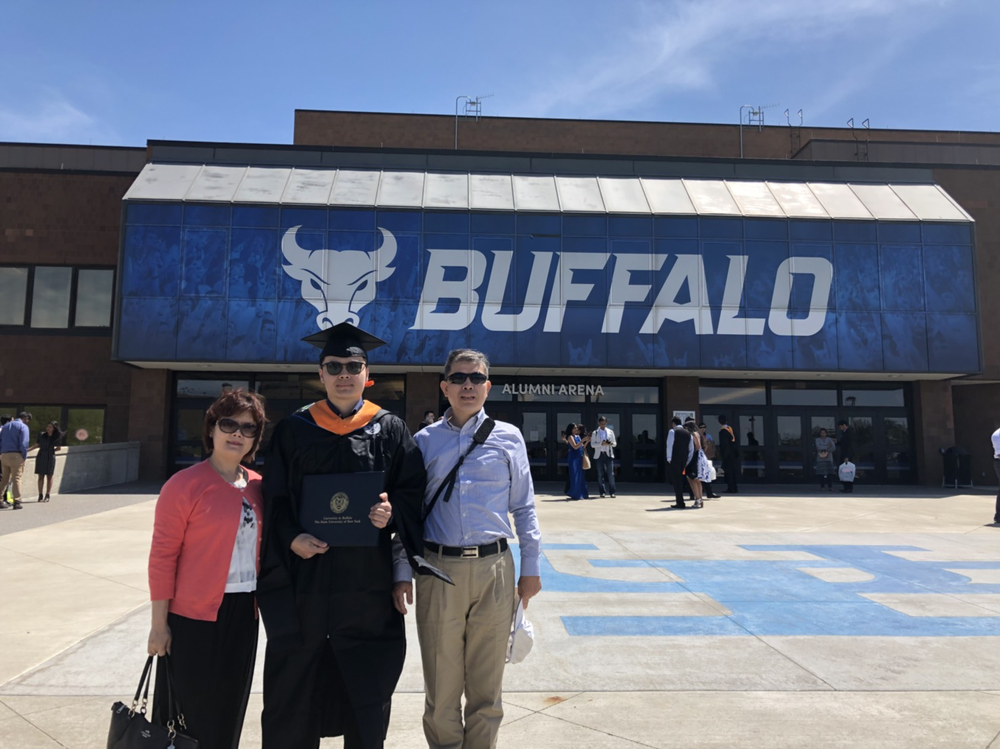

Graduation, Class of 2018

"You are educated. Your certification is in your degree. You may think of it as the ticket to the good life. Let me ask you to think of an alternative. Think of it as your ticket to change the world."
-Tom Brokaw
After all the hard work, I got my master degree of Computer Science & Engineering at University at Buffalo.
The two years in UB was not an easy one. There were so many challenges that I've never met before. The first time to jump start my car, the first time to argue with DMV...etc. Not to mention the study was heavy for non English native speaker like me. But the most valuable thing I've learned here must be how to be lonely and happy. Back to the life in Taiwan, I was kind of a extrovert who always hanging out with friends. Now, I feel being an introvert gives me more time to explore myself without affecting by peers and this is sometimes an useful lifestyle.
Studying in UB is an unforgetable experience in my life and it will last in my heart forever. Thanks to my parents' support and thanks to all the friends in buffalo. I can't achieve all of these without them. It's not the end, it's a begining of another journey. Big shout out for me!